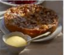

Apple Bavarian Torte (✭ ✭ ✭ ✭)

Có những chiều, trời mưa hoài như thế. Tình đã nhạt, quay về là không thể. Em đừng chờ, mong nhớ cũng bằng không. - Eliheli
INGREDIENTS
- Thành phần 1
- Thành phần 2
- Thành phần 3
- Thành phần 4
- Thành phần 5
- Thành phần 6
- Thành phần 7
- Thành phần 8
- Thành phần 9
- Thành phần 10
- Thành phần 11
- Thành phần 12
DIRECTIONS
- Hướng dẫn 1
- Hướng dẫn 2
- Hướng dẫn 3
- Hướng dẫn 4
- Hướng dẫn 5
- Hướng dẫn 6
- Hướng dẫn 7
REVIEWS
-
Đánh giá 1 Các yếu tố bên ngoài: Màu sắc, cách trang trí, tính thẩm mỹ, mùi hương.
Đánh giá 2 Các yếu tố bên trong: Hương vị, kết cấu, sự hài hòa, nguyên liệu tươi ngon, các tính chất hóa hoc của món ăn.
Đánh giá 3 Một số yếu tố khác: Độ chuyên nghiệp nhà hàng, phản hồi của các khách hàng khác, sự sáng tạo, cách khơi gợi sự tò mò.